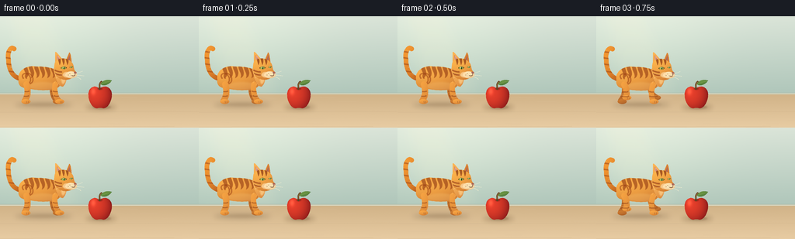
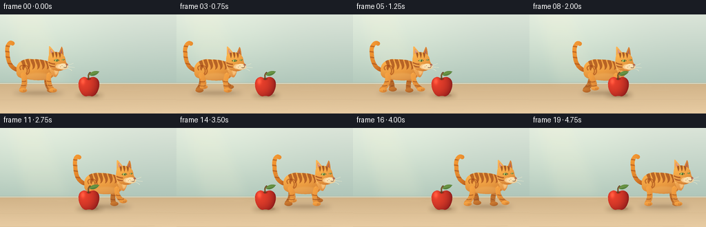

CODING AGENTS AS PIXEL WORLD MODELS
traex/GPT-6.1-Sol · instance_preservation_0006
点击播放 · 原生 RGB 像素
逐轮保存的候选
回放视频、检查图与代码变化。
每份候选均可单独播放。实际图片检查记录在下方工具轨迹中。
候选 01播放与检查图
点击播放 · 原生 RGB 像素


展开代码变化
--- 上一保存版本
+++ 本次保存版本
@@ -0,0 +1,224 @@
+from pathlib import Path
+import json, math
+import numpy as np
+from PIL import Image, ImageDraw, ImageFilter
+import artifact_io
+
+ROOT=Path(__file__).resolve().parent
+SPEC=json.loads((ROOT/'task_spec.json').read_text())
+W,H=SPEC['width'],SPEC['height']; S=4
+WW,HH=W*S,H*S
+rng=np.random.default_rng(22)
+Y,X=np.mgrid[0:HH,0:WW].astype(float); X/=S; Y/=S
+
+def bezier_path(commands):
+ pts=[]; p=None
+ for c in commands:
+ if c[0]=='M': p=np.array(c[1:],float);pts.append(tuple(p))
+ elif c[0]=='L': p=np.array(c[1:],float);pts.append(tuple(p))
+ elif c[0]=='C':
+ a=np.array(c[1:3]); b=np.array(c[3:5]); e=np.array(c[5:7])
+ for t in np.linspace(0,1,25)[1:]:
+ q=(1-t)**3*p+3*(1-t)**2*t*a+3*(1-t)*t*t*b+t**3*e;pts.append(tuple(q))
+ p=e
+ elif c[0]=='Q':
+ a=np.array(c[1:3]);e=np.array(c[3:5])
+ for t in np.linspace(0,1,18)[1:]:
+ q=(1-t)**2*p+2*(1-t)*t*a+t*t*e;pts.append(tuple(q))
+ p=e
+ return pts
+
+def mask_path(cmd,ox=0,oy=0):
+ im=Image.new('L',(WW,HH));d=ImageDraw.Draw(im)
+ d.polygon([((a+ox)*S,(b+oy)*S) for a,b in bezier_path(cmd)],fill=255)
+ return im
+
+def ellipse_mask(box):
+ im=Image.new('L',(WW,HH));ImageDraw.Draw(im).ellipse(tuple(v*S for v in box),fill=255);return im
+
+def stroke_mask(cmd,width,ox=0,oy=0):
+ im=Image.new('L',(WW,HH));d=ImageDraw.Draw(im)
+ points=[((a+ox)*S,(b+oy)*S) for a,b in bezier_path(cmd)]
+ d.line(points,fill=255,width=max(1,round(width*S)),joint='curve')
+ r=width*S/2
+ for x,y in [points[0],points[-1]]:d.ellipse((x-r,y-r,x+r,y+r),fill=255)
+ return im
+
+def solid(im,mask,col,alpha=1,blur=0):
+ if blur:mask=mask.filter(ImageFilter.GaussianBlur(blur*S))
+ if alpha!=1:mask=mask.point(lambda v:int(v*alpha))
+ im.paste(col,(0,0,WW,HH),mask)
+
+def shaded(im,mask,cx,cy,rx,ry,top=(246,165,70),bottom=(157,67,22),grain=.6):
+ # Continuous rounded-surface diffuse and soft directional lighting.
+ u=(X-cx)/rx;v=(Y-cy)/ry
+ z=np.sqrt(np.maximum(0,1-np.minimum(1,u*u*.65+v*v*.7)))
+ fac=np.clip(.48+.36*z-.24*v-.13*u,0,1)
+ a=np.array(bottom);b=np.array(top)
+ rgb=a[None,None,:]+fac[:,:,None]*(b-a)[None,None,:]
+ tex=np.sin(X*8+np.sin(Y*4))*np.sin(Y*10+X*.2)*grain
+ rgb=np.clip(rgb+tex[:,:,None],0,255).astype(np.uint8)
+ im.paste(Image.fromarray(rgb),(0,0),mask)
+
+# Warm minimal interior, with a pale sage wall, soft daylight, and a matte oak floor.
+wall=np.zeros((HH,WW,3),float)
+t=np.clip(Y/110,0,1)
+wall[:]=np.array([218,228,216])[None,None,:]*(1-t[:,:,None])+np.array([171,195,183])[None,None,:]*t[:,:,None]
+glow=np.exp(-(((X-53)/105)**2+((Y-30)/71)**2))
+wall+=glow[:,:,None]*np.array([12,12,8])
+floor=Y>=101
+ft=np.clip((Y-101)/43,0,1)
+fcol=np.array([209,179,136])[None,None,:]*(1-ft[:,:,None])+np.array([232,204,163])[None,None,:]*ft[:,:,None]
+wall=np.where(floor[:,:,None],fcol,wall)
+noise=rng.normal(0,.24,(HH,WW,1));wall=np.clip(wall+noise,0,255).astype('uint8')
+BG=Image.fromarray(wall)
+# An understated baseboard and grain keep the scene grounded, without distractions.
+d=ImageDraw.Draw(BG)
+d.line([(0,99*S),(WW,99*S)],fill=(176,190,172),width=S)
+d.line([(0,100*S),(WW,100*S)],fill=(226,221,197),width=S)
+for yy in [124,143]:
+ d.line([(0,yy*S),(WW,(yy-.6)*S)],fill=(205,177,138),width=1)
+for j in range(28):
+ x=rng.uniform(0,256);y=rng.uniform(103,144);le=rng.uniform(8,46)
+ d.line([(x*S,y*S),((x+le)*S,(y+.1)*S)],fill=(int(216+8*(y-101)/43),int(187+10*(y-101)/43),int(147+11*(y-101)/43)),width=1)
+# Diffused sunlit patch, a quiet background accent.
+light=mask_path([('M',14,0),('L',59,0),('L',101,99),('L',39,99)])
+solid(BG,light,(255,246,212),.13,7)
+
+# Apple is drawn in exactly the same location, size and lighting in every frame.
+def apple(im):
+ solid(im,ellipse_mask((110,113,150,122)),(91,66,36),.23,3)
+ solid(im,ellipse_mask((119,115,143,120)),(88,54,26),.24,1)
+ m=mask_path([('M',128,94),('C',122,87,113,93,114,102),('C',114,110,119,119,125,119),('C',128,118,130,118,133,119),('C',139,119,144,110,144,101),('C',144,93,136,87,128,94)])
+ u=(X-128)/15;v=(Y-104)/15
+ z=np.sqrt(np.maximum(0,1-u*u*.82-v*v*.67))
+ intensity=np.clip(.30+.53*z-.22*u-.14*v,0,1)
+ lo=np.array([108,15,20]);hi=np.array([241,67,45])
+ pix=lo+intensity[:,:,None]*(hi-lo)
+ sheen=np.exp(-(((X-120)/3.0)**2+((Y-97)/4.4)**2))*45
+ pix+=sheen[:,:,None]*np.array([1,.75,.55])
+ fleck=(np.sin(X*4.3+Y*2.1)*np.sin(Y*5.2-X*.6)>.94)*4
+ pix+=fleck[:,:,None]*np.array([1,.8,.4])
+ im.paste(Image.fromarray(np.clip(pix,0,255).astype('uint8')),(0,0),m)
+ solid(im,ellipse_mask((125.5,92,132,95)),(115,30,20),.65,.55)
+ solid(im,stroke_mask([('M',128.4,94),('C',128.3,90,127.8,87,130.6,84.5)],2),(96,65,32))
+ solid(im,stroke_mask([('M',128.1,91.5),('Q',128.5,87,130.3,85)],.6),(174,128,73))
+ leaf=mask_path([('M',129.5,88),('C',133,81,140,82,144,83),('C',141,88,135,91,129.5,88)])
+ shaded(im,leaf,136,86,8,4,(109,151,68),(29,80,44),.1)
+ solid(im,stroke_mask([('M',130,88),('Q',136,85,142.5,83.8)],.55),(151,174,87),.8)
+
+# Tabby markings are fixed in the animal's own coordinates.
+def cat(im,cx,ground,phase,moving):
+ bob=.65*math.sin(2*phase) if moving else 0
+ cy=ground+bob
+ solid(im,ellipse_mask((cx-34,ground-2,cx+40,ground+7)),(71,55,39),.17,3.2)
+ solid(im,ellipse_mask((cx-25,ground,cx+30,ground+4)),(94,64,35),.13,1.5)
+ # Proud upright tail with gently swaying tip.
+ sw=1.7*math.sin(phase*.45) if moving else .4*math.sin(phase)
+ tailcmd=[('M',-25,-31),('C',-38,-32,-42,-46,-42,-56),('C',-44,-66,-39+sw,-74,-35+sw,-70)]
+ tail=stroke_mask(tailcmd,6,cx,cy)
+ shaded(im,tail,cx-39,cy-53,12,25,(246,155,52),(171,76,22))
+ # Thin tail banding, clipped to the curved silhouette.
+ tm=Image.new('L',(WW,HH));td=ImageDraw.Draw(tm)
+ for a,b in [(-59,0),(-51,0),(-42,0),(-67,1)]:
+ td.line([((cx-48)*S,(cy+a)*S),((cx-34)*S,(cy+a+2)*S)],fill=175,width=round(2.1*S))
+ from PIL import ImageChops
+ solid(im,ImageChops.multiply(tm,tail),(159,72,24),.85,.15)
+ # Individual bent legs and oval paws give a clean alternating walk cycle.
+ def leg(hipx,front,offset,far=False):
+ a=phase+offset
+ stride=7.2*math.cos(a) if moving else (1.5 if front else -1)
+ lift=max(0,math.sin(a))*5.4 if moving else 0
+ hx=cx+hipx; hy=cy-24
+ footx=hx+stride+(3 if front else -1);fy=ground-lift
+ knee_x=hx+(-3 if front else 4)+stride*.35; knee_y=cy-12-lift*.25
+ lm=stroke_mask([('M',hx,hy),('Q',knee_x,knee_y,footx,fy-3)],7 if front else 8)
+ low=(136,66,29) if far else (176,86,30)
+ high=(208,125,49) if far else (251,169,70)
+ shaded(im,lm,hx-2,cy-17,13,23,high,low)
+ paw=ellipse_mask((footx-4.5,fy-5,footx+7,fy+1.3))
+ shaded(im,paw,footx,fy-2,9,4,high,low)
+ for v in [-9,-15]:
+ k=(v+24)/21
+ xx=hx+(footx-hx)*k
+ band=stroke_mask([('M',xx-4,cy+v),('Q',xx,cy+v+1,xx+4,cy+v)],1.6)
+ solid(im,ImageChops.multiply(band,lm),(147,70,26),.55)
+ if not far:
+ for q in [2.3,4.4]:
+ solid(im,stroke_mask([('M',footx+q,fy-.2),('L',footx+q-.1,fy-2)],.45),(133,77,44),.65)
+ leg(-19,False,math.pi,True);leg(15,True,0,True)
+ body=mask_path([('M',-29,-30),('C',-31,-42,-19,-49,-6,-47),('C',8,-47,16,-45,23,-40),('C',31,-31,27,-20,17,-18),('C',5,-15,-10,-17,-20,-19),('C',-27,-20,-30,-24,-29,-30)],cx,cy)
+ shaded(im,body,cx-3,cy-33,34,20,(255,179,76),(160,70,25))
+ # A soft pale underbelly blends into the orange coat.
+ belly=ellipse_mask((cx-16,cy-27,cx+21,cy-16))
+ solid(im,ImageChops.multiply(belly,body),(244,188,108),.35,1)
+ for k in range(6):
+ x=-21+k*7.0
+ stripe=mask_path([('M',x-2,-47),('C',x-1,-40,x+3,-38,x+1,-32),('C',x+7,-35,x+5,-42,x+2,-48)],cx,cy)
+ solid(im,ImageChops.multiply(stripe,body),(156,70,24),.70,.22)
+ # Haunch's spiral tabby marking.
+ for q in range(2):
+ mark=stroke_mask([('M',-23+q*4,-32),('C',-27+q*4,-37,-19+q*3,-41,-15+q*3,-35),('C',-12+q*3,-30,-14+q*3,-26,-17+q*3,-25)],1.8,cx,cy)
+ solid(im,ImageChops.multiply(mark,body),(165,75,24),.63,.18)
+ leg(-19,False,0,False);leg(18,True,math.pi,False)
+ # Chest and short neck smoothly bridge the head to the body.
+ neck=mask_path([('M',16,-43),('C',19,-53,31,-51,33,-42),('C',35,-36,32,-24,28,-21),('C',22,-21,19,-30,16,-43)],cx,cy)
+ shaded(im,neck,cx+24,cy-37,13,20,(255,187,94),(184,88,30))
+ bib=mask_path([('M',29,-41),('C',35,-37,32,-26,28,-24),('C',25,-26,26,-36,29,-41)],cx,cy)
+ solid(im,bib,(255,216,152),.65,.7)
+ # Two triangular ears; the far ear is visibly smaller and darker.
+ far=mask_path([('M',31,-53),('L',36,-65),('Q',38,-66,39,-54),('L',39,-49)],cx,cy)
+ shaded(im,far,cx+35,cy-56,8,12,(224,136,54),(170,76,30))
+ solid(im,mask_path([('M',34,-55),('L',36.5,-62),('L',37,-54)],cx,cy),(175,103,87))
+ near=mask_path([('M',18,-49),('L',18,-65),('Q',18.5,-67,21,-64),('L',31,-52)],cx,cy)
+ shaded(im,near,cx+23,cy-56,11,14,(255,184,87),(176,78,26))
+ solid(im,mask_path([('M',20.5,-53),('L',20.4,-62),('L',28,-53)],cx,cy),(207,133,108))
+ solid(im,stroke_mask([('M',21,-56),('L',21.3,-60.5),('L',25,-56)],.65,cx,cy),(236,174,145),.85)
+ head=mask_path([('M',18,-53),('C',23,-59,33,-59,39,-53),('C',43,-49,41,-44,44,-41),('C',47,-39,46,-35,41,-33),('C',37,-30,32,-29,25,-31),('C',19,-33,15,-42,18,-53)],cx,cy)
+ shaded(im,head,cx+29,cy-46,18,17,(255,183,78),(176,80,28))
+ # Forehead stripes and cheek stripes.
+ for x in [23,28,33]:
+ sm=mask_path([('M',x-1.6,-58),('L',x+.9,-49),('Q',x+3,-53,x+1.5,-58)],cx,cy)
+ solid(im,ImageChops.multiply(sm,head),(146,66,25),.78,.1)
+ for v in [-40,-36]:
+ sm=stroke_mask([('M',18,v-2),('Q',23,v,26,v)],1.7,cx,cy)
+ solid(im,ImageChops.multiply(sm,head),(159,73,30),.75,.1)
+ # Almond eyes, jade-gold irises, vertical pupils and tiny catchlights.
+ def eye(ex,ey,scale=1):
+ outline=mask_path([('M',ex-4*scale,ey),('Q',ex,ey-4*scale,ex+4*scale,ey-.4),('Q',ex+1*scale,ey+3*scale,ex-4*scale,ey)],cx,cy)
+ solid(im,outline,(92,67,30))
+ ins=ellipse_mask((cx+ex-2.7*scale,cy+ey-1.9*scale,cx+ex+2.7*scale,cy+ey+1.5*scale))
+ solid(im,ImageChops.multiply(ins,outline),(165,185,82))
+ solid(im,ellipse_mask((cx+ex+.1*scale,cy+ey-1.7*scale,cx+ex+1.1*scale,cy+ey+1.5*scale)),(32,47,29))
+ solid(im,ellipse_mask((cx+ex-.6*scale,cy+ey-1.4*scale,cx+ex+.1*scale,cy+ey-.7*scale)),(255,255,222))
+ eye(29,-45,1);eye(38.8,-46,.57)
+ # Rounded cream muzzle, a small coral nose, mouth and fine whiskers.
+ muzzle=ellipse_mask((cx+31,cy-40.7,cx+46,cy-32))
+ shaded(im,muzzle,cx+36,cy-37,10,6,(255,236,190),(220,165,98),.15)
+ solid(im,ellipse_mask((cx+28,cy-40,cx+37,cy-33)),(255,219,166),.72,.4)
+ solid(im,mask_path([('M',42,-39.7),('Q',45,-41,46,-38.7),('L',43.7,-37),('L',42,-39.7)],cx,cy),(170,100,85))
+ solid(im,stroke_mask([('M',43.6,-37.2),('L',43.5,-35.5),('Q',41,-34.3,39.6,-35.3)],.65,cx,cy),(113,71,44))
+ for dx,dy in [(35,-36),(37,-37.8),(38,-35.7)]:
+ solid(im,ellipse_mask((cx+dx-.35,cy+dy-.35,cx+dx+.35,cy+dy+.35)),(138,100,65),.8)
+ for yy,endx,endy in [(-37,53,-41),(-35.8,55,-35),(-34.5,51,-30.5)]:
+ solid(im,stroke_mask([('M',36,yy),('Q',46,yy-.8,endx,endy)],.43,cx,cy),(255,244,208),.88)
+ for yy,endy in [(-36,-39),(-35,-32)]:
+ solid(im,stroke_mask([('M',32,yy),('Q',24,yy-1,19,endy)],.35,cx,cy),(255,237,193),.68)
+ # Sparse fur-edge strokes on the chest, shoulder and cheek, not random frame noise.
+ for xx,yy in [(18,-28),(22,-25),(24,-23),(20,-34),(19,-37),(26,-31)]:
+ solid(im,stroke_mask([('M',xx,yy),('L',xx-1,yy+2)],.45,cx,cy),(255,205,121),.62)
+
+frames=[]
+for i in range(SPEC['frames']):
+ im=BG.copy()
+ # Clear establishing and ending holds; one uninterrupted left-to-right walk.
+ p=np.clip((i-2)/14,0,1)
+ smooth=p*p*(3-2*p)
+ cx=53+139*smooth
+ moving=2<i<17
+ phase=(i-2)*1.14 if moving else 0
+ cat(im,cx,112,phase,moving)
+ apple(im)
+ frames.append(np.asarray(im.resize((W,H),Image.Resampling.LANCZOS).convert('RGB')))
+artifact_io.save(np.stack(frames).astype(np.uint8),ROOT)
+print('Saved',len(frames),'RGB frames at',W,H)
可观测工具轨迹
实际执行的命令与返回图片。
命令 1exit 0
/bin/bash -lc 'ls -la && cat prompt.txt && cat GENERATION_RULES.md && cat task_spec.json'
命令 2exit 0
/bin/bash -lc 'cat artifact_io.py && cat player_template.html | head -35'
命令 3exit 0
/bin/bash -lc "cat > generate.py <<'PY'
from pathlib import Path
import json, math
import numpy as np
from PIL import Image, ImageDraw, ImageFilter
import artifact_io
ROOT=Path(__file__).resolve().parent
SPEC=json.loads((ROOT/'task_spec.json').read_text())
W,H=SPEC['width'],SPEC['height']; S=4
WW,HH=W*S,H*S
rng=np.random.default_rng(22)
Y,X=np.mgrid[0:HH,0:WW].astype(float); X/=S; Y/=S
def bezier_path(commands):
pts=[]; p=None
for c in commands:
if c[0]=='M': p=np.array(c[1:],float);pts.append(tuple(p))
elif c[0]=='L': p=np.array(c[1:],float);pts.append(tuple(p))
elif c[0]=='C':
a=np.array(c[1:3]); b=np.array(c[3:5]); e=np.array(c[5:7])
for t in np.linspace(0,1,25)[1:]:
q=(1-t)**3*p+3*(1-t)**2*t*a+3*(1-t)*t*t*b+t**3*e;pts.append(tuple(q))
p=e
elif c[0]=='Q':
a=np.array(c[1:3]);e=np.array(c[3:5])
for t in np.linspace(0,1,18)[1:]:
q=(1-t)**2*p+2*(1-t)*t*a+t*t*e;pts.append(tuple(q))
p=e
return pts
def mask_path(cmd,ox=0,oy=0):
im=Image.new('L',(WW,HH));d=ImageDraw.Draw(im)
d.polygon([((a+ox)*S,(b+oy)*S) for a,b in bezier_path(cmd)],fill=255)
return im
def ellipse_mask(box):
im=Image.new('L',(WW,HH));ImageDraw.Draw(im).ellipse(tuple(v*S for v in box),fill=255);return im
def stroke_mask(cmd,width,ox=0,oy=0):
im=Image.new('L',(WW,HH));d=ImageDraw.Draw(im)
points=[((a+ox)*S,(b+oy)*S) for a,b in bezier_path(cmd)]
d.line(points,fill=255,width=max(1,round(width*S)),joint='curve')
r=width*S/2
for x,y in [points[0],points[-1]]:d.ellipse((x-r,y-r,x+r,y+r),fill=255)
return im
def solid(im,mask,col,alpha=1,blur=0):
if blur:mask=mask.filter(ImageFilter.GaussianBlur(blur*S))
if alpha"'!=1:mask=mask.point(lambda v:int(v*alpha))
im.paste(col,(0,0,WW,HH),mask)
def shaded(im,mask,cx,cy,rx,ry,top=(246,165,70),bottom=(157,67,22),grain=.6):
# Continuous rounded-surface diffuse and soft directional lighting.
u=(X-cx)/rx;v=(Y-cy)/ry
z=np.sqrt(np.maximum(0,1-np.minimum(1,u*u*.65+v*v*.7)))
fac=np.clip(.48+.36*z-.24*v-.13*u,0,1)
a=np.array(bottom);b=np.array(top)
rgb=a[None,None,:]+fac[:,:,None]*(b-a)[None,None,:]
tex=np.sin(X*8+np.sin(Y*4))*np.sin(Y*10+X*.2)*grain
rgb=np.clip(rgb+tex[:,:,None],0,255).astype(np.uint8)
im.paste(Image.fromarray(rgb),(0,0),mask)
# Warm minimal interior, with a pale sage wall, soft daylight, and a matte oak floor.
wall=np.zeros((HH,WW,3),float)
t=np.clip(Y/110,0,1)
wall[:]=np.array([218,228,216])[None,None,:]*(1-t[:,:,None])+np.array([171,195,183])[None,None,:]*t[:,:,None]
glow=np.exp(-(((X-53)/105)**2+((Y-30)/71)**2))
wall+=glow[:,:,None]*np.array([12,12,8])
floor=Y>=101
ft=np.clip((Y-101)/43,0,1)
fcol=np.array([209,179,136])[None,None,:]*(1-ft[:,:,None])+np.array([232,204,163])[None,None,:]*ft[:,:,None]
wall=np.where(floor[:,:,None],fcol,wall)
noise=rng.normal(0,.24,(HH,WW,1));wall=np.clip(wall+noise,0,255).astype('"'uint8')
BG=Image.fromarray(wall)
# An understated baseboard and grain keep the scene grounded, without distractions.
d=ImageDraw.Draw(BG)
d.line([(0,99*S),(WW,99*S)],fill=(176,190,172),width=S)
d.line([(0,100*S),(WW,100*S)],fill=(226,221,197),width=S)
for yy in [124,143]:
d.line([(0,yy*S),(WW,(yy-.6)*S)],fill=(205,177,138),width=1)
for j in range(28):
x=rng.uniform(0,256);y=rng.uniform(103,144);le=rng.uniform(8,46)
d.line([(x*S,y*S),((x+le)*S,(y+.1)*S)],fill=(int(216+8*(y-101)/43),int(187+10*(y-101)/43),int(147+11*(y-101)/43)),width=1)
# Diffused sunlit patch, a quiet background accent.
light=mask_path([('M',14,0),('L',59,0),('L',101,99),('L',39,99)])
solid(BG,light,(255,246,212),.13,7)
# Apple is drawn in exactly the same location, size and lighting in every frame.
def apple(im):
solid(im,ellipse_mask((110,113,150,122)),(91,66,36),.23,3)
solid(im,ellipse_mask((119,115,143,120)),(88,54,26),.24,1)
m=mask_path([('M',128,94),('C',122,87,113,93,114,102),('C',114,110,119,119,125,119),('C',128,118,130,118,133,119),('C',139,119,144,110,144,101),('C',144,93,136,87,128,94)])
u=(X-128)/15;v=(Y-104)/15
z=np.sqrt(np.maximum(0,1-u*u*.82-v*v*.67))
intensity=np.clip(.30+.53*z-.22*u-.14*v,0,1)
lo=np.array([108,15,20]);hi=np.array([241,67,45])
pix=lo+intensity[:,:,None]*(hi-lo)
sheen=np.exp(-(((X-120)/3.0)**2+((Y-97)/4.4)**2))*45
pix+=sheen[:,:,None]*np.array([1,.75,.55])
fleck=(np.sin(X*4.3+Y*2.1)*np.sin(Y*5.2-X*.6)>.94)*4
pix+=fleck[:,:,None]*np.array([1,.8,.4])
im.paste(Image.fromarray(np.clip(pix,0,255).astype('uint8')),(0,0),m)
solid(im,ellipse_mask((125.5,92,132,95)),(115,30,20),.65,.55)
solid(im,stroke_mask([('M',128.4,94),('C',128.3,90,127.8,87,130.6,84.5)],2),(96,65,32))
solid(im,stroke_mask([('M',128.1,91.5),('Q',128.5,87,130.3,85)],.6),(174,128,73))
leaf=mask_path([('M',129.5,88),('C',133,81,140,82,144,83),('C',141,88,135,91,129.5,88)])
shaded(im,leaf,136,86,8,4,(109,151,68),(29,80,44),.1)
solid(im,stroke_mask([('M',130,88),('Q',136,85,142.5,83.8)],.55),(151,174,87),.8)
# Tabby markings are fixed in the animal's own coordinates.
def cat(im,cx,ground,phase,moving):
bob=.65*math.sin(2*phase) if moving else 0
cy=ground+bob
solid(im,ellipse_mask((cx-34,ground-2,cx+40,ground+7)),(71,55,39),.17,3.2)
solid(im,ellipse_mask((cx-25,ground,cx+30,ground+4)),(94,64,35),.13,1.5)
# Proud upright tail with gently swaying tip.
sw=1.7*math.sin(phase*.45) if moving else .4*math.sin(phase)
tailcmd=[('M',-25,-31),('C',-38,-32,-42,-46,-42,-56),('C',-44,-66,-39+sw,-74,-35+sw,-70)]
tail=stroke_mask(tailcmd,6,cx,cy)
shaded(im,tail,cx-39,cy-53,12,25,(246,155,52),(171,76,22))
# Thin tail banding, clipped to the curved silhouette.
tm=Image.new('L',(WW,HH));td=ImageDraw.Draw(tm)
for a,b in [(-59,0),(-51,0),(-42,0),(-67,1)]:
td.line([((cx-48)*S,(cy+a)*S),((cx-34)*S,(cy+a+2)*S)],fill=175,width=round(2.1*S))
from PIL import ImageChops
solid(im,ImageChops.multiply(tm,tail),(159,72,24),.85,.15)
# Individual bent legs and oval paws give a clean alternating walk cycle.
def leg(hipx,front,offset,far=False):
a=phase+offset
stride=7.2*math.cos(a) if moving else (1.5 if front else -1)
lift=max(0,math.sin(a))*5.4 if moving else 0
hx=cx+hipx; hy=cy-24
footx=hx+stride+(3 if front else -1);fy=ground-lift
knee_x=hx+(-3 if front else 4)+stride*.35; knee_y=cy-12-lift*.25
lm=stroke_mask([('M',hx,hy),('Q',knee_x,knee_y,footx,fy-3)],7 if front else 8)
low=(136,66,29) if far else (176,86,30)
high=(208,125,49) if far else (251,169,70)
shaded(im,lm,hx-2,cy-17,13,23,high,low)
paw=ellipse_mask((footx-4.5,fy-5,footx+7,fy+1.3))
shaded(im,paw,footx,fy-2,9,4,high,low)
for v in [-9,-15]:
k=(v+24)/21
xx=hx+(footx-hx)*k
band=stroke_mask([('M',xx-4,cy+v),('Q',xx,cy+v+1,xx+4,cy+v)],1.6)
solid(im,ImageChops.multiply(band,lm),(147,70,26),.55)
if not far:
for q in [2.3,4.4]:
solid(im,stroke_mask([('M',footx+q,fy-.2),('L',footx+q-.1,fy-2)],.45),(133,77,44),.65)
leg(-19,False,math.pi,True);leg(15,True,0,True)
body=mask_path([('M',-29,-30),('C',-31,-42,-19,-49,-6,-47),('C',8,-47,16,-45,23,-40),('C',31,-31,27,-20,17,-18),('C',5,-15,-10,-17,-20,-19),('C',-27,-20,-30,-24,-29,-30)],cx,cy)
shaded(im,body,cx-3,cy-33,34,20,(255,179,76),(160,70,25))
# A soft pale underbelly blends into the orange coat.
belly=ellipse_mask((cx-16,cy-27,cx+21,cy-16))
solid(im,ImageChops.multiply(belly,body),(244,188,108),.35,1)
for k in range(6):
x=-21+k*7.0
stripe=mask_path([('M',x-2,-47),('C',x-1,-40,x+3,-38,x+1,-32),('C',x+7,-35,x+5,-42,x+2,-48)],cx,cy)
solid(im,ImageChops.multiply(stripe,body),(156,70,24),.70,.22)
# Haunch's spiral tabby marking.
for q in range(2):
mark=stroke_mask([('M',-23+q*4,-32),('C',-27+q*4,-37,-19+q*3,-41,-15+q*3,-35),('C',-12+q*3,-30,-14+q*3,-26,-17+q*3,-25)],1.8,cx,cy)
solid(im,ImageChops.multiply(mark,body),(165,75,24),.63,.18)
leg(-19,False,0,False);leg(18,True,math.pi,False)
# Chest and short neck smoothly bridge the head to the body.
neck=mask_path([('M',16,-43),('C',19,-53,31,-51,33,-42),('C',35,-36,32,-24,28,-21),('C',22,-21,19,-30,16,-43)],cx,cy)
shaded(im,neck,cx+24,cy-37,13,20,(255,187,94),(184,88,30))
bib=mask_path([('M',29,-41),('C',35,-37,32,-26,28,-24),('C',25,-26,26,-36,29,-41)],cx,cy)
solid(im,bib,(255,216,152),.65,.7)
# Two triangular ears; the far ear is visibly smaller and darker.
far=mask_path([('M',31,-53),('L',36,-65),('Q',38,-66,39,-54),('L',39,-49)],cx,cy)
shaded(im,far,cx+35,cy-56,8,12,(224,136,54),(170,76,30))
solid(im,mask_path([('M',34,-55),('L',36.5,-62),('L',37,-54)],cx,cy),(175,103,87))
near=mask_path([('M',18,-49),('L',18,-65),('Q',18.5,-67,21,-64),('L',31,-52)],cx,cy)
shaded(im,near,cx+23,cy-56,11,14,(255,184,87),(176,78,26))
solid(im,mask_path([('M',20.5,-53),('L',20.4,-62),('L',28,-53)],cx,cy),(207,133,108))
solid(im,stroke_mask([('M',21,-56),('L',21.3,-60.5),('L',25,-56)],.65,cx,cy),(236,174,145),.85)
head=mask_path([('M',18,-53),('C',23,-59,33,-59,39,-53),('C',43,-49,41,-44,44,-41),('C',47,-39,46,-35,41,-33),('C',37,-30,32,-29,25,-31),('C',19,-33,15,-42,18,-53)],cx,cy)
shaded(im,head,cx+29,cy-46,18,17,(255,183,78),(176,80,28))
# Forehead stripes and cheek stripes.
for x in [23,28,33]:
sm=mask_path([('M',x-1.6,-58),('L',x+.9,-49),('Q',x+3,-53,x+1.5,-58)],cx,cy)
solid(im,ImageChops.multiply(sm,head),(146,66,25),.78,.1)
for v in [-40,-36]:
sm=stroke_mask([('M',18,v-2),('Q',23,v,26,v)],1.7,cx,cy)
solid(im,ImageChops.multiply(sm,head),(159,73,30),.75,.1)
# Almond eyes, jade-gold irises, vertical pupils and tiny catchlights.
def eye(ex,ey,scale=1):
outline=mask_path([('M',ex-4*scale,ey),('Q',ex,ey-4*scale,ex+4*scale,ey-.4),('Q',ex+1*scale,ey+3*scale,ex-4*scale,ey)],cx,cy)
solid(im,outline,(92,67,30))
ins=ellipse_mask((cx+ex-2.7*scale,cy+ey-1.9*scale,cx+ex+2.7*scale,cy+ey+1.5*scale))
solid(im,ImageChops.multiply(ins,outline),(165,185,82))
solid(im,ellipse_mask((cx+ex+.1*scale,cy+ey-1.7*scale,cx+ex+1.1*scale,cy+ey+1.5*scale)),(32,47,29))
solid(im,ellipse_mask((cx+ex-.6*scale,cy+ey-1.4*scale,cx+ex+.1*scale,cy+ey-.7*scale)),(255,255,222))
eye(29,-45,1);eye(38.8,-46,.57)
# Rounded cream muzzle, a small coral nose, mouth and fine whiskers.
muzzle=ellipse_mask((cx+31,cy-40.7,cx+46,cy-32))
shaded(im,muzzle,cx+36,cy-37,10,6,(255,236,190),(220,165,98),.15)
solid(im,ellipse_mask((cx+28,cy-40,cx+37,cy-33)),(255,219,166),.72,.4)
solid(im,mask_path([('M',42,-39.7),('Q',45,-41,46,-38.7),('L',43.7,-37),('L',42,-39.7)],cx,cy),(170,100,85))
solid(im,stroke_mask([('M',43.6,-37.2),('L',43.5,-35.5),('Q',41,-34.3,39.6,-35.3)],.65,cx,cy),(113,71,44))
for dx,dy in [(35,-36),(37,-37.8),(38,-35.7)]:
solid(im,ellipse_mask((cx+dx-.35,cy+dy-.35,cx+dx+.35,cy+dy+.35)),(138,100,65),.8)
for yy,endx,endy in [(-37,53,-41),(-35.8,55,-35),(-34.5,51,-30.5)]:
solid(im,stroke_mask([('M',36,yy),('Q',46,yy-.8,endx,endy)],.43,cx,cy),(255,244,208),.88)
for yy,endy in [(-36,-39),(-35,-32)]:
solid(im,stroke_mask([('M',32,yy),('Q',24,yy-1,19,endy)],.35,cx,cy),(255,237,193),.68)
# Sparse fur-edge strokes on the chest, shoulder and cheek, not random frame noise.
for xx,yy in [(18,-28),(22,-25),(24,-23),(20,-34),(19,-37),(26,-31)]:
solid(im,stroke_mask([('M',xx,yy),('L',xx-1,yy+2)],.45,cx,cy),(255,205,121),.62)
frames=[]
for i in range(SPEC['frames']):
im=BG.copy()
# Clear establishing and ending holds; one uninterrupted left-to-right walk.
p=np.clip((i-2)/14,0,1)
smooth=p*p*(3-2*p)
cx=53+139*smooth
moving=2<i<17
phase=(i-2)*1.14 if moving else 0
cat(im,cx,112,phase,moving)
apple(im)
frames.append(np.asarray(im.resize((W,H),Image.Resampling.LANCZOS).convert('RGB')))
artifact_io.save(np.stack(frames).astype(np.uint8),ROOT)
print('Saved',len(frames),'RGB frames at',W,H)
PY
python generate.py"命令 4exit 0
/bin/bash -lc "python - <<'PY'
from pathlib import Path
import numpy as np
p=Path('.')
a=np.load(p/'pixels.npz')['pixels']
print('pixels:',a.shape,a.dtype)
print('PNG frames:',len(list((p/'frames').glob('*.png'))))
for f in ['generate.py','pixels.npz','index.html','inspection.png']:
print(f,(p/f).stat().st_size,'bytes')
PY"视觉工具实际返回图片 1

保存候选 1 份；完成命令 4 次；可验证图片返回 1 张。原始 API 响应与完整日志保留在本地。